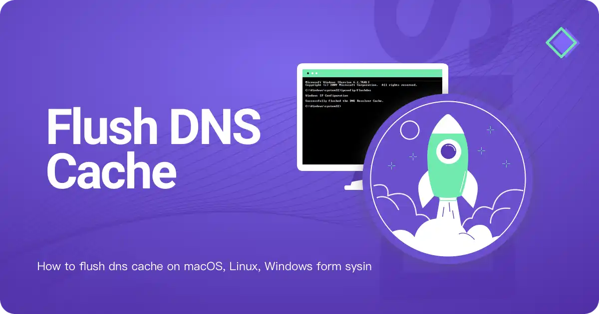
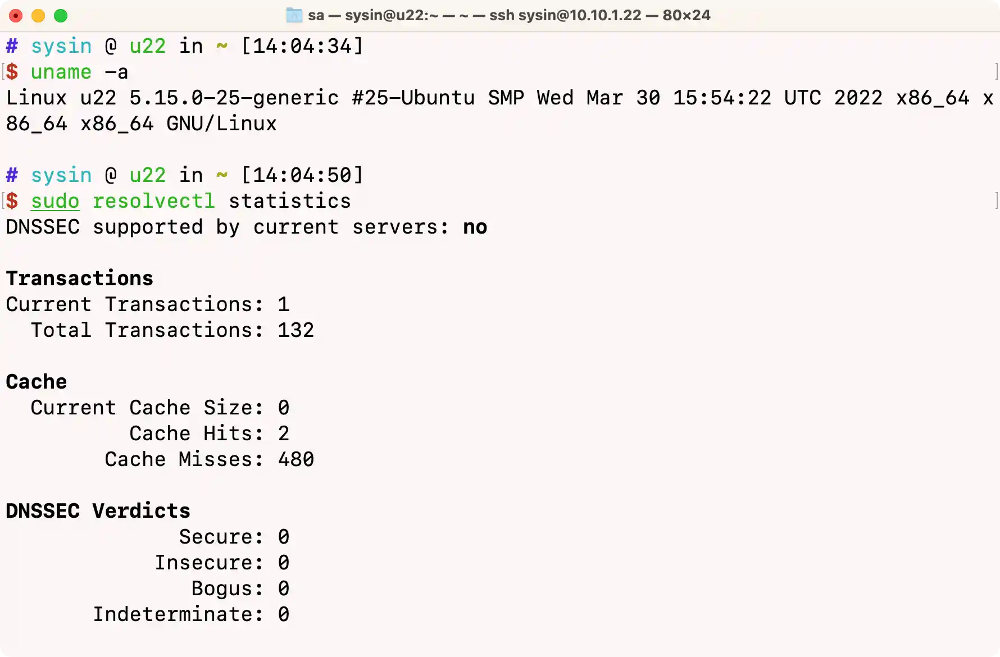

请访问原文链接：如何刷新 DNS 缓存 (macOS, Linux, Windows) 查看最新版。原创作品，转载请保留出处。
作者主页：sysin.org
刷新或者清除 DNS 缓存，通常是因为有过时的 DNS 记录，需要立刻从服务端重新获取更新，常见于安全要求或者测试调试等场景。

1. Apple macOS
macOS Catalina and later
打开终端，输入如下命令来重置 DNS 缓存，适用于 macOS 10.15 至 14.x:
1 | sudo killall -HUP mDNSResponder; sudo dscacheutil -flushcache |
OS X Yosemite and later
打开终端，输入如下命令来重置 DNS 缓存，适用于 OS X 10.10.4 至 10.14.x:
1 | sudo killall -HUP mDNSResponder |
打开终端，输入如下命令来重置 DNS 缓存，适用于 OS X 10.10 至 10.10.3:
1 | sudo discoveryutil mdnsflushcache |
OS X Mavericks, Mountain Lion, and Lion
打开终端，输入如下命令来重置 DNS 缓存，适用于 OS X 10.9.5 及之前版本:
1 | sudo killall -HUP mDNSResponder |
Mac OS X Snow Leopard
打开终端，输入如下命令来重置 DNS 缓存，适用于 OS X 10.6 至 10.6.8:
1 | sudo dscacheutil -flushcache |
参考：Reset the DNS cache in OS X
2. FreeBSD
FreeBSB 自带 nscd（Name Service Cache Daemon），默认没有启用。
以下为 FreeBSD 12 和 13 示例。
运行如下命令启动 nscd 并设置为开机自动运行 (sysin)：
1 | sudo service nscd enable && sudo service nscd start |
清除缓存即重启 nscd 服务：
1 | sudo service nscd restart |
3. Linux
3.1 Linux 刷新 DNS 缓存通用参考
Linux 可以运行 dnsmasq、nscd、unbound 或者 systemd-resolved 作为名称服务缓存守护进程 (sysin)。
dnsmasq
如果你的 DNS 服务器是用 dnsmasq 实现的，用下面这个命令:
1 | service dnsmasq restart |
如果 dnsmasq 服务不存在，先安装 dnsmasq，命令如下：
- RHEL 及其兼容发行版：
sudo yum install dnsmasq - Debian 及其兼容发行版：
sudo apt install dnsmasq - 或者其他发行版对应的软件包管理命令
注：DNSmasq 是一个轻巧的，容易使用的 DNS 服务工具，它可以应用在内部网和 Internet 连接的时候的 IP 地址 NAT 转换，也可以用做小型网络的 DNS 服务。
nscd
如果是清除 nscd 上的 Cache，可重新启动 nscd 服务来达成清除 DNS Cache 的效果：
1 | service nscd restart |
如果 nscd 服务不存在，先安装 nscd，命令如下：
- RHEL 及其兼容发行版：
sudo yum install nscd - Debian 及其兼容发行版：
sudo apt install nscd - 或者其他发行版对应的软件包管理命令
unboud
unbound 使用 unbound-control 命令来管理 DNS 缓存：
1 | 刷新所有缓存 |
如果 unbound-control 无法执行，先安装 unbound，命令如下：
- RHEL 及其兼容发行版：
sudo yum install unbound - Debian 及其兼容发行版：
sudo apt install unbound - 或者其他发行版对应的软件包管理命令
systemd-resolved
使用 resolvectl 命令刷新 DNS 缓存：
1 | Step 1. 查看 DNS 缓存状况 |
如果 resolvectl 无法执行，先安装 systemd-resolved，命令如下：
- RHEL 及其兼容发行版：
sudo yum install systemd-resolved - Debian 及其兼容发行版：
sudo apt install systemd-resolved - 或者其他发行版对应的软件包管理命令
BIND (服务端，与上述客户端 DNS 缓存不同)
如果是清除 BIND 服务器上的 CACHE，用这个命令:
1 | rndc flush |
如果 rndc 无法执行，先安装 bind，命令如下：
- RHEL 及其兼容发行版：
sudo yum install bind - Debian 及其兼容发行版：
sudo apt install bind9 - 或者其他发行版对应的软件包管理命令
以下对几个主流发行版单独说明。
3.2. RHEL
包括其兼容发行版：CentOS 及 AlmaLinux、Rocky Linux、Oracle Linux
RHEL 及其兼容发行版，默认不启用 DNS 查询缓存。
参看：Best practice for DNS caching in RHEL
常见解决方案：
- dnsmasq
- nscd（未来版本可能会移除）
- unbound
- systemd-resolved
dnsmasq
使用 dnsmasq 来启用 dns 缓存：
1 | yum -y install dnsmasq |
清除缓存即重启 dnsmasq 服务：
1 | systemctl restart dnsmasq |
nscd
使用 nscd 来启用 dns 缓存：
1 | yum -y install nscd |
清除缓存即重启 nscd 服务：
1 | systemctl restart nscd |
3.3. Ubuntu
Ubuntu 默认运行 systemd-resolved 服务用于名称服务缓存，使用 resolvectl 命令调用 systemd-resolved.service 解析主机名、IP 地址、域名、DNS 资源记录和服务。

systemd-resolved.service 默认启用：
1 | systemctl is-enabled systemd-resolved.service |
刷新 DNS 缓存：
1 | Ubuntu 22.04 示例 |
备注：Ubuntu 也可以配置使用 nscd 或者 dnsmasq。
注意：在旧版本中 resolvectl 命令曾经为 systemd-resolve，现已废弃。命令参数略有差异。
1 | Ubuntu 20.04.5 同时支持 resolvectl 和 systemd-resolve |
3.4. Debian
Debian 默认没有启用 DNS 缓存机制（基本系统）。可以配置使用 systemd-resolved.service 来启用。
以下为 Debian 12 示例。
启用 systemd-resolved.serivce：
1 | sudo apt install systemd-resolved |
查看服务已经启用：
1 | systemctl is-enabled systemd-resolved.service |
刷新 DNS 缓存：
1 | Step 1. 查看 DNS 缓存状况 |
备注：Debian 也可以配置使用 nscd 或者 dnsmasq。
4. Microsoft Windows
清除 dns 缓存内容：
1 | ipconfig/flushdns |
查看 dns 缓存内容：
1 | ipconfig/displaydns |
Windows 下的 DNS Cache 是由 DNS Client 后台进程控制的，你可以在 “服务” 中将其关闭，这样 windows 就不会进行 DNS 缓存，每次都将直接查询 DNS Server。
上述操作通常也和浏览器刷新 DNS 缓存配合使用。
更多：HTTP 协议与安全

文章用于推荐和分享优秀的软件产品及其相关技术，所有软件默认提供官方原版（免费版或试用版），免费分享。对于部分产品笔者加入了自己的理解和分析，方便学习和研究使用。任何内容若侵犯了您的版权，请联系作者删除。如果您喜欢这篇文章或者觉得它对您有所帮助，或者发现有不当之处，欢迎您发表评论，也欢迎您分享这个网站，或者赞赏一下作者，谢谢！
 支付宝赞赏
支付宝赞赏  微信赞赏
微信赞赏赞赏一下
敬请注册！点击 “登录” - “用户注册”（已知不支持 21.cn/189.cn 邮箱）。 请勿使用联合登录（已关闭）。